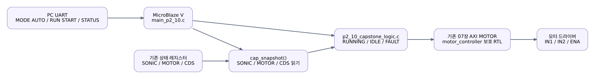
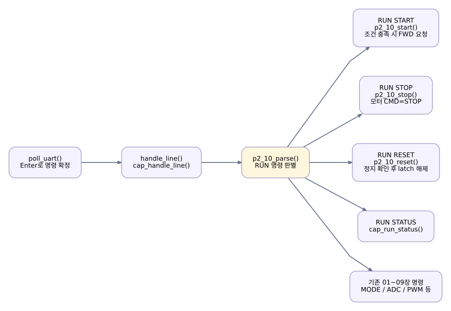
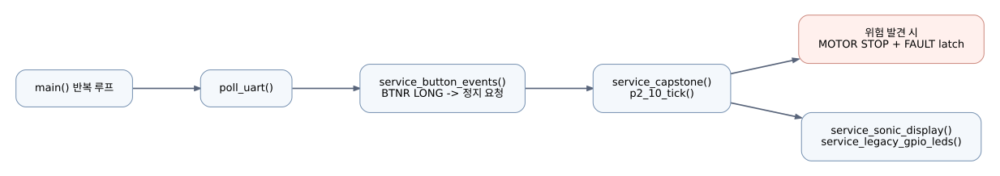

01. 완성 시스템·핵심 동작
목표: 09장까지 완성한 MicroBlaze V·UART·Timer·버튼 IRQ·CdS·초음파·XADC·PWM·FND·모터의 기능을 유지하고, 10장에 명령 기반 운전 허용/정지·오류 래치(Latch, 오류 상태 유지)를 추가한다.

| 문자열 명령 | 실제 수행 |
|---|---|
MODE AUTO | 초음파 주기 측정 + CdS AUTO 시작, 모터 정지 요청 |
RUN START | 안전 상태 확인 후 모터 정회전 요청(물리 동작은 상태로 별도 확인) |
RUN STOP | 모터 STOP 요청; FAULT 상태는 유지 |
RUN RESET | 정지 확인 후 C 오류 잠금 해제. 모터 자동 기동 안 함 |
RUN STATUS | RUN 상태, 오류 비트, 안전 상태 및 모터 실제 출력 표시 |
MODE MANUAL | RUNNING이면 먼저 STOP, CdS 수동 복귀 |
MOTOR STOP | 모터 STOP 명령은 항상 허용 |
WARN 20 | 20cm 경고·모터 보호 기준 설정 |
STATUS | 01~09장 상태에 RUN 상태·FAULT 필드 추가 |
ADC READ / ADC PWM | XADC 저장 샘플 조회·LED1 PWM 갱신(안전 인터록에는 사용하지 않음) |
02. 01~10장 기능 소유권
| 장 | 입력/기능 | 하드웨어·소프트웨어 경계 |
|---|---|---|
| 01 | LED ON/OFF/STATUS | P2-01 AXI LED IP → LED0 |
| 02 | DISP dddd/OFF | FND scan RTL, 자리별 4자리 표시 |
| 03 | BTNU/D/L/R 단·장누름 | 2FF/디바운스/IRQ, BTN C는 Reset |
| 04 | PWM 0..100 | 별도 PWM Core + AXI, LED1 |
| 05 | CdS AUTO, CDS POL | 센서 동기/필터, 자동 LED1 게이트 |
| 06 | HC-SR04 | 센서 TRIG/ECHO, LED2 경고, 거리 FND |
| 07 | MOTOR | 07장 모터 RTL의 근접/신선도/방향전환 보호 |
| 08 | ADC READ/PWM | XADC Wizard 재사용, PWM LED1 |
| 09 | MODE/IRQ/LED14·15 | 09장 문자열 정책, Timer/Buttons ISR, LED14/15 |
| 10 | RUN START/STOP/RESET/STATUS | 새 C 운전 정책; 하드웨어 보호는 07장 그대로 |
03. 운전 모드·안전 규칙
| 항목 | 10장 확정 규칙 |
|---|---|
| 기동 | MODE AUTO만으로 구동하지 않음. 별도 RUN START가 필요 |
| RUN START 전 | SONIC AUTO+유효·안전·신선 샘플, CdS VALID, 모터 TRIP 없음, 경고 거리 20~400cm 필요 |
| 운전 중 | 초음파 근접·Timeout·데이터 신선도 만료·CdS 미확정·외부 모터 CMD 변경 감지 시 STOP 요청+FAULT latch |
| 경고 설정 | 운전 중 모든 WARN 변경과 CdS 극성 변경 금지 |
| 버튼 | BTNR 5초 장누름은 기존 FND 초기화와 10장 소프트웨어 모터 STOP 요청 |
| 복귀 | RUN STOP 이후에도 오류 래치 유지; RUN RESET 명령으로 수동 해제 후 다시 RUN START |
| 하드웨어 | 07장 motor_controller의 ENA 차단·Trip·100ms 방향전환 대기는 수정하지 않음 |
| 주의 | BTN 소프트웨어 정지는 안전 인증 긴급정지나 모터 전원 차단을 대체하지 않음 |
모터는 별도 전원과 물리적 전원 차단 수단을 준비합니다. HC-SR04 ECHO의 5V를 Basys3에 직접 넣지 않고, XADC 단극성 차동 입력에는 허용 범위 초과 전압을 가하지 않습니다.
04. 하드웨어·C 제어 구조
PC의 RUN START는 poll_uart() → handle_line() → cap_handle_line() → p2_10_start() 순서로 판단됩니다. cap_snapshot()은 SONIC_STATUS, MOTOR_STATUS_REG, CDS_STATUS, SONIC_WARN_CFG를 읽습니다.
05. UART 명령 플로우차트

Mermaid 원본 · 기존 MODE, ADC, PWM, SONIC, MOTOR, DISP 명령은 앞선 장의 파서로 전달합니다.
06. 반복 감시와 오류 정지

service_capstone()은 RUNNING 상태에서만 위험 조건을 검사하고, 위험 시 MOTOR_CMD_REG에 STOP을 기록한 뒤 FAULT를 유지합니다. 이 C 서비스는 CPU 정지·AXI 버스 고장에 대한 독립 하드웨어 Watchdog(워치독, 동작 감시 타이머)이 아닙니다.
07. 레지스터·포트 계약
| 주소/포트 | 기존 IP에서 읽거나 쓰는 내용 | 의미 |
|---|---|---|
P2_06_SONIC_BASEADDR + 0x04 | SONIC_STATUS 읽기 | bit1 VALID, bit2 TIMEOUT, bit3 RANGE, bit5 UNSAFE, bit6 AUTO |
P2_06_SONIC_BASEADDR + 0x10 | SONIC_WARN_CFG 읽기 | RUN START 시 20~400cm 범위 요구 |
P2_07_MOTOR_BASEADDR + 0x04 | MOTOR_STATUS_REG 읽기 | bit3 TRIP, bit5 SAFE, bit6 FRESH, bit7 AUTO, bit0 ENA |
P2_07_MOTOR_BASEADDR + 0x00 | MOTOR_CMD_REG에 0/1 쓰기 | 0 STOP, 1 FWD. 실제 회전은 STATUS로 확인 |
P2_05_CDS_BASEADDR + 0x04 | CDS_STATUS 읽기 | bit2 VALID. 디지털 밝고/어두움 판정 |
LED14 / LED15 | 기존 AXI GPIO 채널 1 | 명령 활동 표시 / Timer IRQ 하트비트 |
BTNR / BTNC | 기존 03장 / 기존 시스템 Reset | BTNR 5초 장누름 정지요청, BTNC Reset 유지 |
이 표의 주소는 IP 내부 오프셋입니다. 각 P2_XX_*_BASEADDR는 실제 Vivado Address Editor와 Vitis의 xparameters.h에서만 결정합니다.
실습 전 09장 프로젝트 확인
09장 기준 프로젝트에서 시작
Vivado → Open Project
완료한 soc_ip_design_09.xpr를 연다. 아직 없으면 01~09장 실습을 먼저 완료한다.
01~08장 사용자 IP, UART/Timer/INTC, XADC Wizard와 사용자 Top 존재.
동작 원리: 10장은 새 하드웨어 IP를 추가하지 않으므로 09장 기준 프로젝트를 그대로 사용한다.
10장 독립 프로젝트로 복제
09장 기준 프로젝트 훼손 방지
Vivado → File → Project → Save As
$HOME/soc/hw/soc_ip_design_10/soc_ip_design_10.xpr로 복제한다.
새 XPR이 있고 BD·Top이 신규 폴더 내 소스 참조.
동작 원리: 기존 소스 참조를 변경하지 않도록 XPR의 등록 경로를 확인한다.
오류 점검: 원본 09장 외부 절대경로를 참조하면 먼저 분리.
Top·XDC 구조 보존 확인
LED0~2와 LED14/15, 센서 신호 소유권 점검
Sources → Design Sources / Constraints
Top은 basys3_soc11_top이며 배선만 처리한다. 08/09장과 동일 Top을 유지한다.
단일 Top, LED0: 사용자 IP, LED1: Auto/PWM, LED2: SONIC, LED14/15: GPIO.
오류 점검: 이름만 바꾼 중복 Top을 Design Sources에 추가하지 않는다.
기존 07장 motor_controller 확인
안전 조건을 소프트웨어가 우회하지 않는지 점검
BD → P2-07 MOTOR AXI IP 소스
motor_controller.v의 sensor_safe_o, trip_latched_o, motor_ena_o 연결을 확인한다.
초음파 근접/유효/신선도 실패 시 ENA가 OFF가 되는 RTL 경로가 유지.
오류 점검: 07장 RTL 연결을 확인한 뒤 10장 모터 실습 진행.
CdS·초음파·XADC 경로 확인
입출력 전압과 IP 상태 매핑 점검
Block Design / XDC
CdS 디지털 JA1, HC-SR04 TRIG JA2, 변환된 ECHO JA3, XADC VAUX6 입력을 확인한다.
BD External 포트·Top·XDC 이름과 방향이 일치.
오류 점검: HC-SR04 ECHO 변환 / XADC 0~1V 입력 범위 위반 금지.
버튼·Timer IRQ 공용 연결 확인
BTN 장누름 정지와 하트비트 준비
BD → AXI INTC / IRQ 경로
BTNR 이벤트 IP와 AXI Timer가 서로 다른 IRQ 입력으로 연결되고 CPU Interrupt 포트로 합쳐지는지 확인한다.
버튼 IRQ와 Timer IRQ ID가 서로 다름.
오류 점검: SDT 인터럽트 부모 값은 실제 BSP에서 확인해야 함.
09장 C 기준선과 차이 확인
기존 정상 코드 그대로 유지
VS Code → 소스 비교
reference/main_p2_09.c와 sw/main_p2_10.c를 비교한다.
명령 처리 앞부분, 메인 루프, 상태 출력, 초기화에만 10장 기능 추가.
오류 점검: 기존 09장 C 로직 파일은 절대 편집하지 않는다.
캡스톤 정책 모듈 추가
하드웨어와 독립적으로 RUN 상태를 판정
Vitis Explorer → Application → src
p2_10_capstone_logic.c/.h를 추가한다.
p2_10_init(), p2_10_faults(), p2_10_tick() 선언·정의 일치.
오류 점검: 동명의 파일이 중복되지 않도록 소스 경로 확인.
10장 C 메인 교체
기존 09장 메인은 참고용으로 유지
Vitis Explorer → Application → src
main_p2_10.c를 src에 배치하고 구 main_p2_09.c는 빌드 대상에서 제외한다.
빌드 대상 main() 하나, 기존 03~09장 C 보조 모듈 전부 포함.
오류 점검: 중복 main 및 reference 폴더 소스 중복 링크 주의.
실제 AXI 주소·IRQ·Timer Clock 입력
임의 주소·클록 값을 방지
Vivado Address Editor · Vitis BSP xparameters.h
P2_01~P2_08 IP 주소, BTN/Timer IRQ ID, P2_09_TIMER_CLK_HZ 등을 실제 프로젝트 값으로 입력한다.
#error 방어 절이 모두 실제 설정으로 해제된다.
오류 점검: 모의 주소 0x43C...는 호스트 테스트 전용 값이며 실물에 복사 금지.
IP 초기 상태·보호 임계값 점검
자동 기동 방지
09장 초기화 코드 / Vitis Build
Motor STOP, SONIC 자동 비활성, CdS 수동, PWM OFF, SONIC_WARN_CFG 20cm 초기화 확인.
부팅 직후 RUN STATE=IDLE; 모터 ENA OFF.
오류 점검: Power-on 시 기동하면 즉시 모터 전원 제거 후 원인 분석.
독립 C 정책 테스트
실제 보드 전에 명령과 반례 확인
Ubuntu → 터미널 / tests
패키지의 tests/run_host_tests.sh 실행(작업용 PC에 GCC 필요).
RUN 상태·경고 거리·오류 latch가 기대값과 일치.
Vivado 회로 점검·XSA 생성
변경된 소스와 Bitstream 일치
Vivado → Validate Design → Synthesis → Implementation
BD 외부포트/Address Editor 점검 후 합성·배치배선·Timing·DRC 확인, Bitstream과 XSA Export.
오류 없이 생성된 Bitstream/XSA와 실제 타이밍 결과 보관.
오류 점검: 클록 제약 중복, Reset/CDC, 비트폭, I/O 기준을 각각 확인.
Vitis Platform 갱신 및 C 빌드
실제 BSP 링크 확인
Vitis Unified IDE 2024.2
10장 XSA Platform 생성/갱신 후 Application Build.
main_p2_10.c와 모든 보조 .c가 실제 BSP에서 링크된 ELF 생성.
오류 점검: 생성 BSP의 주소와 IRQ API를 대조.
외부 전원·배선 안전 확인
모터 기동 전에 전기적 조건 확보
보드·센서·드라이버 실물
모터 드라이버 외부 전원 OFF로 시작, 공통 GND·ECHO 레벨시프터·XADC 전압 제한 확인. 회전축 주변 정리.
보드 부팅·UART 정상. 물리적인 모터 전원 차단 수단 확보.
오류 점검: BTNR 5초 소프트웨어 STOP은 안전 인증 긴급 정지의 대안이 아님.
UART 초기 상태 확인
문자열 명령·모드 기본값 확인
moserial/minicom · 115200 8N1
보드로 Bitstream/ELF 실행. RUN STATUS, MODE STATUS, MOTOR STATUS 순서로 입력.
RUN IDLE, MODE MANUAL, 모터 요청 STOP/ENA 0 확인.
오류 점검: UART LF/CRLF와 터미널 포트 설정 확인.
기존 LED·FND·PWM 회귀
01~05장 기능을 보존
UART 터미널 / 내장 LED·FND
LED ON, LED OFF, DISP 0050, PWM 50, CDS READ 확인.
LED0, FND 선행 0, LED1 PWM, CdS 상태 각각 확인.
오류 점검: 모터 전원이 없어도 해당 기능 확인 가능.
SONIC 안전·센서 유효 확인
모터 기동 전 위험정보 확보
UART 터미널 / HC-SR04
MODE AUTO를 입력하고 SONIC READ, CDS READ와 RUN STATUS 출력 확인.
SONIC AUTO 1, 안전한 거리에서 GUARD=0이 된 이후에만 RUN START 가능.
오류 점검: HC-SR04 실물 오차·지연/정지 시험 전에는 RUN START 진행하지 않음.
WARN 하한·유효성 반례
경고 거리 완화 우회 차단
UART 터미널
RUN 정지 상태에서 WARN 1 입력 후 RUN START를 시험하고 RUN STATUS 조회.
GUARD에 WARN 오류가 표시되고 모터 기동 거부. WARN 20으로 복귀.
오류 점검: 근접 경고 표시 해제와 실제 모터 안전 경로를 혼동하지 않는다.
RUN START 수동 확인 구동
AUTO 상태에서 명시적 기동
UART 터미널 / 모터 저전력 테스트
센서 정상·모터 전원 안전 확인 후 RUN START 입력.
FWD 요청 뒤 전환 대기/안전 조건 충족 시 구동. MOTOR STATUS로 실제 ENA 확인.
오류 점검: MOTOR STATUS에서 ENA를 확인한다.
근접·Timeout 시 Fault 정지
위험 이벤트 후 재시작 잠금 확인
UART / 초음파 센서 / 드라이버
안전한 테스트 환경에서 물체 접근 또는 센서 신호 실패를 재현하고 RUN STATUS 확인.
FAULT 및 motor CMD STOP. 재차 RUN START 거부.
오류 점검: 모터 ENA 파형을 직접 계측한다.
RUN STOP·RUN RESET 복구
FAULT와 안전상태 복원 절차
UART 터미널
RUN STOP → RUN STATUS → 원인 제거 → RUN RESET → RUN STATUS.
RUN STOP으로 FAULT 유지, RUN RESET 후 IDLE; 자동 재기동 없음.
오류 점검: 전원·센서 원인 해소 없이 즉시 재기동 금지.
BTNR 5초 장누름 정지
버튼 IRQ와 소프트웨어 정지 요청 통합
Basys3 BTNR + UART
안전한 조건에서 RUNNING 상태로 BTNR을 5초 이상 누르고 IRQ STATUS, RUN STATUS 확인.
BTNR long 이벤트로 STOP 요청·FAULT latch, 기존 FND 표시 초기화 유지.
오류 점검: IRQ 유실/COALESCED나 5초 경계 오류 발생 시 IRQ 연결과 LONG 경계를 다시 확인.
MODE MANUAL 전환 회귀
모드 전환 중 모터 우발 기동 방지
UART 터미널
RUNNING 상태에서 MODE MANUAL 입력 후 MOTOR STATUS와 RUN STATUS 조회.
STOP 우선, MODE MANUAL 전환, RUN IDLE; SONIC 안전 감시는 유지.
오류 점검: 수동 MOTOR FWD는 기존 07장 기능이며 별도 명령/안전 조건이 필요.
ADC/PWM/FND/IRQ 상태 통합 확인
전체 감시 항목을 결합한 상태 조회
UART 터미널
ADC READ → ADC PWM → IRQ STATUS → STATUS.
ADC 저장값과 PWM 설정, 버튼/Timer 카운트, RUN_STATE·RUN_FAULT 확인.
오류 점검: ADC_FRESH=UNVERIFIED: 신선한 샘플이란 보장이 없으므로 안전 허용 조건으로 사용 금지.
장별 통합 기능 확인
01~10장 기능 전체 확인
Vivado Reports / UART / 보드
LED0/1/2/14/15, FND 표시, BTN 이벤트, CdS, 초음파, XADC, 모터 보호, UART 문자열을 각자 시험.
Timing·Bitstream·XSA·ELF의 파일 버전을 일치시킨다.
오류 점검: 각 기능을 독립적으로 확인한다.
최종 산출물·재현성 확인
다른 PC에서 동일 절차를 수행할 수 있도록
압축파일 / 버전 기록
XPR/BD, 사용자 IP, C, XDC, HTML 링크를 대조한다.
모든 참조 파일이 존재하고 링크가 올바르다.
오류 점검: 현 패키지는 실제 사용자 PC의 XPR/BD 생성물·Bitstream·XSA·ELF를 포함하지 않음.
35. 전체 코드·해설·테스트 다운로드
reuse/는 앞선 장의 기존 RTL 보존본입니다. 학습용 ZIP에는 Vivado 자동 생성 XPR/BD/IP 전체 제품, XSA, Bitstream, Vitis ELF가 포함되지 않습니다.